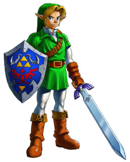
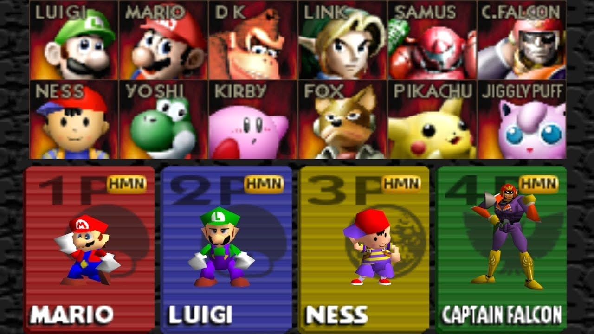
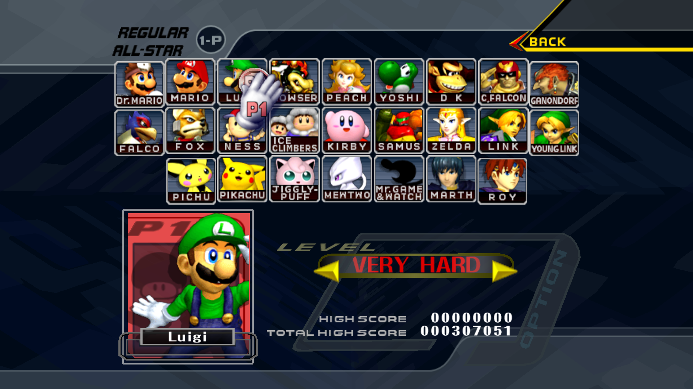
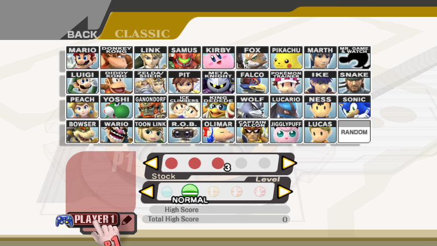
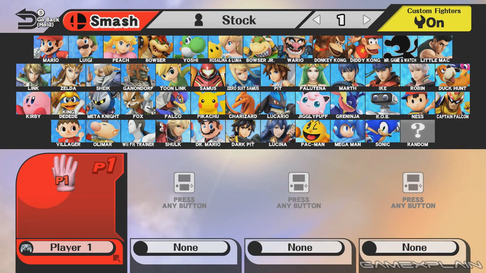
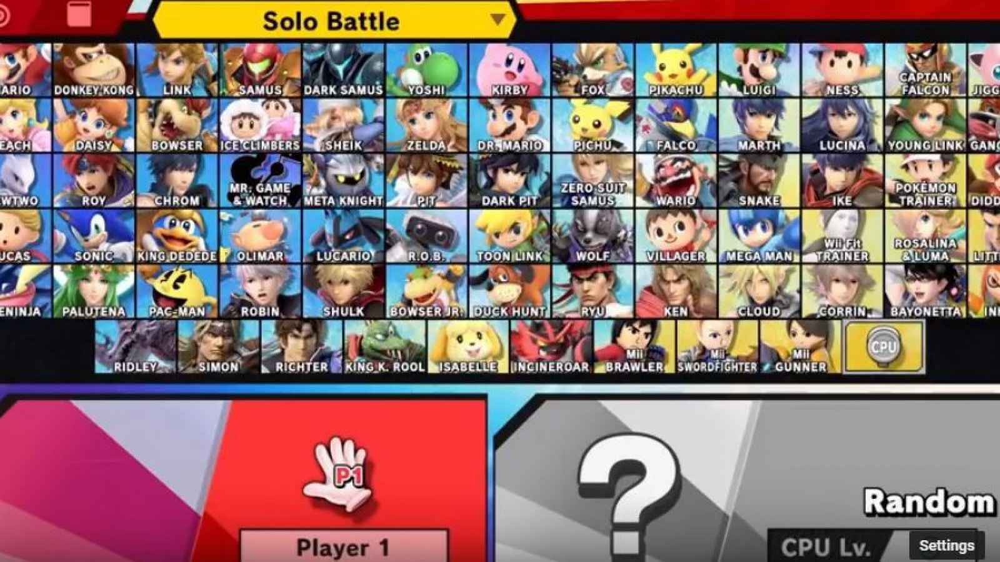

shrine of resurrection
Who is Link exactly?
Link is the main character from the Legend of Zelda series! Ever since his debut in The Legend of Zelda (1986/NES), he has appeared in all 15 games from the popular Legend of Zelda Series!


When deciding for the original Smash Bros 64 roster, Link was added as one of the eight main characters that do not need to be unlocked!
  In Super Smash Brothers, Link is the 3rd character added in a series with more than 70 iconic characters! In this game, Link wears the champions tunic from the Legend of Zelda Breath of the WIld. Link carries his trusted Master Sword and defends himself with the almighty Hylian Shield! He also carries a bow and arrow, a remote bomb that can be detonated and a boomerang! When things get really heated, he pulls out his Ancient Arrow and uses it to either vaporize or blast his foes away!